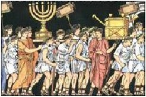

Judaism again loses its raison d’être. This is a huge shock to the fundamental system of Judaism.

0070 Diaspora is considered the ultimate punishment for people fallen away from God, but the Babylonian community is a success. With Hellenism, borders disappear, and Jews follow business opportunities, and actually convert some Gentiles. Because Babylon is outside the Hellenist world, its Jewish community keeps its exclusionist identity. Philo: ‘The diaspora is the realization of God’s promise to Abraham.’
0070 Rabbis: With the Temple gone - who’s in charge? Yohanan Ben Zakkai (30 BC-90 AD) - ‘When in doubt, plant a tree.’ Ritual is modified, as is use of the shofar, which thitherto could only be sounded in the Temple. The new rabbinical model is based not on birth, but vocation. Rabbis are mobile and establish local centers; the nature of ritual is changed from sacrifice to reading and prayer in synagogues. Then Rabban Gamaliel (Acts 5:34) establishes a bureaucracy, supports Rome, and is named patriarch. Prayer is introduced into the synagogues, especially the Amida Prayer, including a benediction against the minim (Christian heretics?). Unlike the time of the destruction of the First Temple, Jews are now more ready to expect the End - Where is God? Was God defeated? Is there a new covenant? People are ready for extreme means and ends.
0080 Gnosticism - Non-rabbinical Jewish sects and early Christian sects of Gnosticism develop out of the remains of apocalyptic expectations after the fall of Jerusalem (70 AD), which shatters the hopes of the coming of God's kingdom on earth and leads to a rejection of the world. Within early Christianity, the teachings of Paul and John may have been a starting point for Gnostic ideas, with a growing emphasis on the opposition between flesh and spirit, the value of charisma, and the disqualification of the Jewish law. Tertullian calls Paul "the apostle of the heretics," because Paul's writings are attractive to Gnostics, and interpreted in a Gnostic way, while Jewish Christians feel he strays from the Jewish roots of Christianity. Paul writes to the Corinthian church members as "having knowledge." Gnostic ideas find a Jewish variation in the mystical study of Kabbalah.
0080 The Gospel according to Matthew - Jesus as the Jewish Messiah
0085 The Gospel according to Luke and the Acts of the Apostles - Jesus as the Universal Savior
0090 The Gospel according to John - Jesus as The Word made Flesh
~~~~~~~~